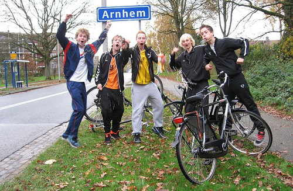

Projecten
1e Periode
De regeling wat projecten betreft in het 3e jaar is iets anders de de voorafgaande jaren, in de 1e periode moesten wij namelijk een `gym+ - partij´ oprichten. Dit bestond uit : Standpunten maken, campagne, en een ´debat´. Onze partij heette V.I.P. , wat voor Vrienden In Politiek staat, en natuurlijk Very Important Persons. :D Dat groepje bestond uit, van links naar rechts op de foto: Jolan, Martijn, Jens, ikzelf, en Willem. Dit telde als 1 project.

- 6 Studiepunten.2e en 3e Periode
Mijn project van de 2e én 3e periode gaat over 'een brug bouwen'. Dat is tenminste wat we proberen te bereiken. Het begon ermee dat we via biologie een opdracht kregen om een creatieve manier te vinden om water te reinigen. Toen heb ik dit idee samen met Bram Lichtenberg verder uitgewerkt. Later kwam Lizanne Takke er ook nog bij. Het uiteindelijke idee houdt in dat er lucht in water wordt gepompt door middel van een brug met inzakbare tegels. Onder de tegels zitten dan zakken met lucht en daaraan een buis in het water. Wanneer iemand op de tegel stapt, dat wordt de lucht er uit geperst door de buis heen, in het water. Als er meer zuurstof in het water komt, door overdraging van zuurstof tussen de ingepompte lucht en het water, dan kunnen bepaalde bacteriën, die het water reinigen, beter hun werk doen. Daar gaat het allemaal om. Inmiddels hebben we contact met het Waterschap Rijn en IJssel. Deze hebben met ons rond de tafel gezeten, en ze wouden dat we gingen kijken of het allemaal mogelijk is. Daar zijn we mee aan de slag gegaan, en momenteel zijn we een prototype van een tegel aan het maken. Wat we ermee hopen te bereiken is natuurlijk dat die brug ook echt gebouwd wordt.
4e Periode
Ik heb een site, groen-art.nl, gebouwd. Eigenlijk ben ik hiermee al in de 2e periode mee begonnen. Een site maken leer je namelijk geleidelijk, je komt problemen tegen, en dat kun je dan oplossen. Zo leer je steeds meer bij, tot je genoeg hebt geleerd om een mooie site te bouwen.
Ik maakte die site voor mijn moeder, want zij wou al heel lang een eigen schilder-site, ze schildert namelijk graag, en wil dat natuurlijk laten zien ook! Voor informatica kregen we de opdracht van Harmen Lafeber om een site te bouwen. En die ging dus over schilderijen. Op een bepaald moment dacht ik, ik ben er zo veel mee bezig, ik kan er net zo goed een project van maken, het past immers ook in mijn profiel. Mijn portfolio-site, een subdomein, wordt de site die ik voor informatica inlever. Enfin, terug naar het project 'groen-art'. Ik weet nu redelijk wat af van html, css, en een beetje van php. Html kan ik zelf scripten, css redelijk, en php een heel klein beetje. Het werk dat ik moest verrichten bestond niet alleen uit scripten en problemen oplossen. Het bestond ook uit administratie, foto`s maken, fotobewerking, en design. Ik was al 3 volle dagen van mijn vakantie bezig ,met alleen het foto`s van de schilderijen maken, en er gegevens bij verzamelen zoals; afmetingen, namen (die ik vaak zelf moest verzinnen en dus ook de kunst moest bekijken), materialen, en soorten verf. Deze dingen moet ik nog steeds bijhouden, omdat er ook steeds nieuwe schilderijen bijkomen. In totaal was het eigenlijk een enorm karwei, zeker als je het in je eentje doet. Maar ik deed het voor mijn moeder, en eigenlijk ook wel voor mijzelf. Maar toch het meest voor mijn moeder! :D
-8 studiepunten-